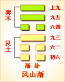
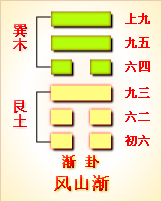

<!DOCTYPE html PUBLIC "-//W3C//DTD XHTML 1.0 Transitional//EN" "http://www.w3.org/TR/xhtml1/DTD/xhtml1-transitional.dtd">

<html xmlns="http://www.w3.org/1999/xhtml">
<head>
<meta content="text/html; charset=utf-8" http-equiv="Content-Type"/>
<title>周易第五十三卦：渐卦 风山�?巽上艮下原文解释翻译-周易-国学�?/title>
<meta content="周易,渐卦,风山�?巽上艮下" name="keywords"/>
<meta content="周易,渐卦,风山�?巽上艮下，周易第五十三卦：渐�?风山�?巽上艮下解释翻译�?（风山渐）巽上艮�?《渐》：女归吉，利贞�?初六，鸿渐于干。小子厉，有言，无咎�?六二，鸿渐于磐，饮食衎衎，吉�?九三，鸿渐于陆。夫征不复，妇孕不育，凶。利御寇�?六四" name="description"/>
<link href="css.css" media="screen" rel="stylesheet" type="text/css"/>
</head>
<body>
<div class="gxlayout">
</div>
<div class="gxlayout">
<div class="ihead">
<div class="title"><a>周易</a></div>
<ul class="more fl">
<li>当前位置:<a>国学梦首�?/a> &gt; <a>国学经典</a> &gt; <a>经部</a> &gt; <a>四书五经</a> &gt; <a>周易</a> &gt;  周易第五十三卦：渐卦 风山�?巽上艮下原文解释翻译</li>
</ul>
</div>
<div class="gxbl fl">
<div class="latitle">

<h1>周易第五十三卦：渐卦 风山�?巽上艮下</h1>
<div class="lainfo"><span>作者：佚名</span> <span>全集�?a>周易</a></span> <span>来源：网�?/span> <span>[<a rel="nofollow" target="_blank">挑错/完善</a>]</span></div>
</div>
<div class="lacontent">
<div class="clearfix"></div>
<p style="text-align:center"></p>
<p style="text-align:center"><a>周易第五十三卦详�?/a></p>
<p style="text-align:center"><a>第五十三卦初六爻详解</a>　<a>第五十三卦六二爻详解</a>　<a>第五十三卦九三爻详解</a></p>
<p style="text-align:center"><a>第五十三卦六四爻详解</a>　<a>第五十三卦九五爻详解</a>　<a>第五十三卦上九爻详解</a></p>
<p><strong><a target="_blank">周易</a>第五十三�?�?风山�?巽上艮下</strong></p>
<p>渐：女归吉，利贞�?/p>
<p>彖曰：渐之进也，女归吉也。进得位，往有功也。进以正，可以正邦也。其位刚，得中也。止而巽，动不穷也�?/p>
<p>象曰：山上有木，�?君子以居贤德，善俗�?/p>
<p>初六：鸿渐于干，小子厉，有言，无咎�?象曰：小子之厉，义无咎也�?/p>
<p>六二：鸿渐于磐，饮食衍衍，吉。象曰：饮食衍衍，不素饱也�?/p>
<p>九三：鸿渐于陆，夫征不复，妇孕不育，�?利御寇。象曰：夫征不复，离群丑也。妇孕不育，失其道也。利用御寇，顺相保也�?/p>
<p>六四：鸿渐于木，或得其桷，无咎。象曰：或得其桷，顺以巽也�?/p>
<p>九五：鸿渐于陵，妇三岁不孕，终莫之胜，吉。象曰：终莫之胜，吉;得所愿也�?/p>
<p>上九：鸿渐于逵，其羽可用为仪，吉。象曰：其羽可用为仪，吉;不可乱也�?/p>
<p><strong><a href="53_渐卦.html" target="_blank">渐卦</a>卦象，木山渐卦的象征意义</strong></p>
<p>渐卦，这个卦是异卦相叠，下卦为艮，上卦为巽。艮为山，巽为木。山上有木，逐渐成长，山也随着增高。这是逐渐进步的过程，所以称渐。“渐”即“进”，渐渐前进而不急速�?/p>
<p>渐卦位于<a href="52_艮卦.html" target="_blank">艮卦</a>之后，《序卦》中这样解释道：“物不可以终止，故受之渐。渐者，进也。”艮卦谈止，止到尽头又须开始活动，这时出现的是渐卦。渐为进，并且是有秩序地渐进。《杂卦》中这样说道：“渐，女归待男行也。”古代女子若要出嫁，必须要等待男方行聘，以便依序进展，这也体现了渐的特点�?/p>
<p>《象》中这样解释渐卦：山上有木，�?君子以居贤德善俗。这里指出：渐卦的卦象是�?�?下巽(�?上，表明高山上的树木逐渐成长，象征循序渐�?君子观看高山上的树木逐渐成长，于是修养德性，改善社会的风尚、礼节和习惯�?/p>
<p>渐卦象征着循序渐进，告诉人们渐进蓄德的道理，属于上上卦。《象》中这样来断此卦：俊鸟幸得出笼中，脱离灾难显威风，一朝得意福力至，东西南北任意行�?/p>
<p>【渐卦卦象，木山渐卦的象征意义释义�?/p>
<p>此卦卦名为渐。《序卦传》中说：“物不可以终止，故受之以渐。渐者，进也。”也就是说，事物不会总是停留在静止状态中，所以在表示停止的艮卦的后面，是渐卦。渐，就是前进的意思。《杂卦传》中说：“渐，女归待男行也。”可见“渐”字的削进，不是突飞猛进，是等待、顺应时势变化而渐进�?/p>
<p>渐卦�?a target="_blank">�?/a>：渐卦的卦画是三个阴爻三个阳爻，其排列顺序与<a href="54_归妹�?html" target="_blank">归妹�?/a>正好相反，渐卦与归妹卦互为覆卦�?/p>
<p>渐卦卦象：从卦象上分析，渐卦上卦为巽为木为长女，下卦为艮为山为少男，山上生木便渐卦的卦象�?a target="_blank">山中</a>有森林，可是这些森林不是突然形成的，而是一^棵棵的小树苗不断生长，逐渐壮大，逐渐形成了森林。树的生长是缓慢的，这种缓慢的生长，正是渐卦要表达的含义�?/p>
<p>关键词：周易,渐卦,风山�?巽上艮下</p>
<div class="clearfix"></div>
<div class="title"><div class="thot">解释翻译</div><span>[挑错/完善]</span></div><p><a href="53_渐卦.html" target="_blank">渐卦</a>：女子出嫁，是吉利的事。吉利的占问�?/p>
<p>初六：鸿雁走进山涧，小孩也去很危险，应当河责制止�?/p>
<p>六二：鸿雁走上涯岸，丰衣足食，自得其乐。吉利�?/p>
<p>九三;鸿雁走上陆地，丈夫出征没回来，妻子怀孕而流产。凶险。有利于抵御敌寇�?/p>
<p>六四：鸿雁飞上树木，贵族已准备好了盖房的桶条。没有灾祸�?/p>
<p>九五：鸿雁飞上山头，妻子多年没有怀孕，却始终没有受到欺侮。吉利�?/p>
<p>上九：鸿雁飞上大山，它的羽毛可以作文舞的道具。吉利�?/p>
<div class="title"><div class="thot">注释出处</div><span>[请记住我�?国学�?www.guoxuemeng.com]</span></div><p>①渐是本卦的标题。渐的意思是渐进，缓进。全卦内容以鸿雁起兴，作为主线，占问日常生活中的事情。标题的“渐”字是全卦中多见词�?/p>
<p>②归：女子出嫁�?/p>
<p>③鸿：水鸟。干：山涧�?/p>
<p>④小子：小孩子。厉：危 险�?/p>
<p>⑤言：意思是谴责，河责�?/p>
<p>(6)磐：涯岸�?/p>
<p>(7)�?(kan)：自得的样子�?/p>
<p>(8)陆：高而平的地�?/p>
<p>(9)�?jue)：屋顶上承瓦 的方木条�?/p>
<p>(10)胜：欺凌，欺侮�?/p>
<p>(11)阿：大山�?/p>
<p>(12)仪：用鸟羽编 织的文舞道具�?/p>
<div class="clearfix"></div>
<div class="contextdhall clearfix">
<ul>
<li>上一篇：<a href="52_艮卦.html">周易第五十二卦：艮卦 艮为�?艮上艮下</a> </li>
<li>下一篇：<a href="54_归妹�?html">周易第五十四卦：归妹�?雷泽归妹 震上兑下</a> </li>
<li>全   文�?a>周易</a></li>
</ul>
</div>
</div>
<div class="clearfix mt20"></div>
</div>
</div>
<div class="clearfix mt20"></div>
<div class="gxlayout">
</div>
<script>
var _hmt = _hmt || [];
(function() {
  var hm = document.createElement("script");
  hm.src = "https://hm.baidu.com/hm.js?872034ded637616c5cf8e173a446bb0e";
  var s = document.getElementsByTagName("script")[0];
  s.parentNode.insertBefore(hm, s);
})();
</script>
</body>
</html>
